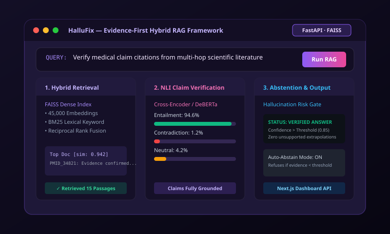

HalluFix — Evidence-First Hybrid RAG Framework

Main Technology Stack
Python
FastAPI
FAISS Vector Index
sentence-transformers
Cross-Encoder / NLI
NetworkX Graph Retrieval
SQLite
Next.js UI
Project Overview
HalluFix is an evidence-first hybrid Retrieval-Augmented Generation (RAG) research system engineered to combat large language model hallucinations. Rather than generating answers without guardrails, HalluFix retrieves multi-hop evidence passages, reranks them through cross-encoders and knowledge graphs, verifies factual claim entailment using Natural Language Inference (NLI), attaches verifiable citations, and explicitly abstains when grounding evidence is inadequate.
Key Features
- Hybrid Retrieval Pipeline: Combines dense semantic embeddings (FAISS) with lexical BM25 keyword matching for optimal recall.
- Knowledge Graph Expansion: Leverages NetworkX entity relation graphs to retrieve linked multi-hop context.
- NLI Claim Verification: Deconstructs generated claims into verifiable propositions and grades entailment against source texts.
- Automated Abstention Mechanism: Calculates confidence scores and refrains from answering when source evidence falls below strict thresholds.
- Source Citation Auditing: Every verified claim links directly to its source document snippet and similarity score.
- Interactive Next.js Dashboard: Clean visual inspection interface built over a high-performance asynchronous FastAPI backend.
Engineering Challenges & Solutions
- Latency Reduction in NLI Scoring: Cross-encoders can be compute-intensive. Solved by implementing batch inference and caching frequently queried vector embeddings in FAISS.
- Balancing Abstention vs Answer Rate: Tuned statistical entailment thresholds to minimize false positives without over-abstaining on nuanced questions.
- Graph-Vector Fusion: Blended graph degree centrality with cosine similarity metrics into a unified reranking function.
 View GitHub Code
View GitHub Code